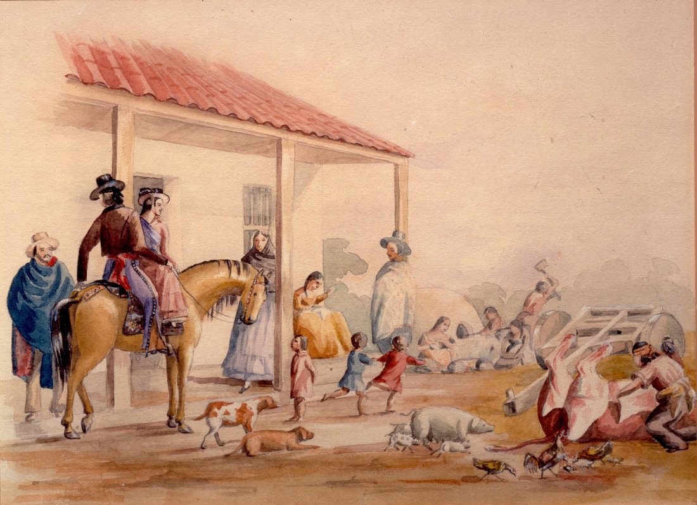
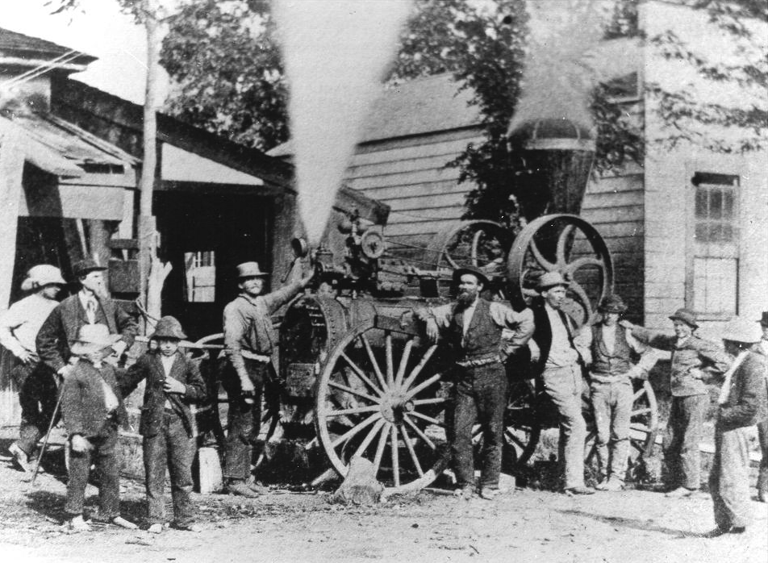

The Fruits of our Labor
Agriculture
© 2020 Hannah Clayborn All Rights Reserved
|
Although it looked pristine to the first Mexican and European visitors in the 1820s, the land around present-day Healdsburg had been intensively used and roughly divided into territories for thousands of years. The Southern Pomo and Wappo people burned to create meadows to attract deer and other game, cultivated creek-side sedge beds that were the source of roots used to weave intricate basketry, and transplanted black walnut and other favored plants to their village sites.
Large-scale, European-style agriculture touched these people long before an iron plowshare ever furrowed the earth. After the founding of Mission San Rafael in 1817 and Mission San Francisco de Solano in Sonoma in 1823, Mexican military officials roamed these valleys to punish Indian raiders who stole horses or cattle, or more often to kidnap laborers for the mission and rancho fields. Despite these raids and imported diseases, the remnants of Pomo and Wappo tribelets still populated several village sites by the time the first Euro-American settlers arrived in the 1840s. Inevitably many of the indigenous practices, such as periodic burning to maintain food sources and game were disrupted or discontinued. In June, 1836, a treaty was concluded between General Mariano Vallejo, an unlikely Smokey the Bear, and some warring Wappo tribes. There was one important provision, as follows: 4. The fields shall not be burned in time of drought on any pretext whatever, but if this is done by other tribes, the contracting parties shall not be held responsible, but they shall do all in their power to prevent it.(1) Hides and Horsemen
A potential Indian labor force to herd and sow and harvest made the area even more attractive. Cyrus Alexander arrived to begin preparations for a 48,000-acre cattle ranch, Rancho Sotoyome, for Captain H.D. Fitch in present-day Alexander Valley in 1840. Only barely settled in, Alexander gained a neighbor, teenager Jose German Piña and his family, who had ambitions for a 17,000-acre cattle ranch, Rancho Tzabaco, in present-day Dry Creek Valley. The owners of these vast land grants planted orchards and brought in herds of sheep and long-horned cattle. Cyrus would soon establish a gristmill, a tannery at the base of Fitch Mountain, and a profitable cigarette-rolling industry, with tobacco imported by Captain Fitch. German Piña had grain and cornfields by 1843, with three large Indian villages providing labor. Cattle hides were the most common currency in early California, and could be used to barter for goods or pay wages. In 1850, one cow could be worth as much as $25, while one acre of the Tzabaco Rancho was worth only $1.18. The costly cattle roamed at large, and weekly rodeos served to gather and count them. Neighboring rancheros would attend to spot their strays by their fierro (brand), or senal (ear mark). The yearly mantanzas, or slaughter, was by far the most critical event, producing the rancho family’s annual income. The indescribable sound, stench, and dust would carry for miles. While the meat might be left rotting on the ground, the hides were carefully counted and guarded and the tallow, or fat, saved in boiling rendering pots to use for candle making. A Yankee visitor, Joseph Revere, described a mantanzas on the Sotoyome Rancho in 1846: ...Thus amidst clouds of dust, through which might be caught indistinct glimpses of agitated horns, fierce-rolling eyeballs and elevated tails—an occasional, wild-looking, naked Indian vaquero, with his hair and top-knot streaming out, or a Californian vaquero, known by his fluttering serape—the bellowing rushing herd approached the corral. One early resident of the Tzabaco and Sotoyome Ranchos, Blas Piña, described agriculture and food processing in the 1840s: …Instead of bread, our mothers, sisters and women made tortillas. They ground the flour in metates, which were also called “three-footed stones…The soil was plowed in some areas to plant corn. Those who cultivated small plots would cut a stick and give it a sharp point. They would use it to pierce the earth, depositing the seed in the hole and covering it with a bit of soil…Corn was cooked in water with lime to prepare it for tortillas. The lime was found on the outskirts of Santa Cruz. Lime would peel off the shell of the kernels without imparting a bad taste. Grain was also ground in metates in primitive times, but water mills were built in Petaluma and other sites in the south in 1838… …Every rancho had a kitchen garden, usually fenced with brush or protected from livestock by a group of Indian huts… Women milked the cows and made both aged and fresh cheese. Fresh cheese was called “asadero” and made in the form of a circular tortilla, but much thicker… …Men planted corn, potatoes, beans and grains. Most only planted enough to feed their families, but those who ran the missions cultivated large swaths of land with the help of the Indians. Their produce was sold to the Russians or to ship captains.(2)  Life on a California Rancho near Monterey, painting by Alfred Sully in 1849 (Oakland Museum of California)
A Fortune for Onions
Correspondence from Captain Fitch at the time Cyrus Alexander moved to his own rancho in 1845 indicates that Alexander was raising wheat, corn, and beans. Later, while adding a second story to his adobe house in 1850, Alexander traded 11 pigs, worth $75 each, for milled lumber. In the early years, rancho owners still hunted a great deal, tracking and killing the large predators, mountain lions and cougars, coyotes, and bears that often killed their valuable livestock. Alexander occasionally came upon a grizzly grazing contentedly on the wild clover. Using a combination of traps and poison, Alexander was able to kill as many as half a dozen large predators in a single night. Alexander made his first ready cash during the Gold Rush by selling food to hungry miners. Suddenly there was a lucrative market for his produce and any available livestock, often paid for with gold dust. In 1850, he cleared $1,200 profit—a fortune—on one crop of onions freighted to the gold camps by oxcart. In the same year, a passing drover en route to the mines paid him $1,000 for twenty hogs. He got $16 a head for his sheep. Weary immigrants flowed into the valleys, often suffering from scurvy and other ailments. Many chose to settle on the Sotoyome or Tzabaco, where they found mighty oak, madrone, and redwood, rich river loam, and abundant water. Some bought their land from Alexander or Piña , but most settled illegally, turning out bumper crops of wheat on virgin soil, following the example of town founder, Harmon Heald, who used cheap Native labor to raise 10 acres of wheat to finance his little store in 1852. The majority of Sotoyome and Tzabaco produce, in the form of untaxable income from crops, went to squatters, not to rancho owners, who were nevertheless taxed heavily on their vast acreage. By 1859 the area seemed so productive that a local private school was given the impressive name, the Agricultural and Mechanical University of California. W.P. Ewing, who bought a tract of land from Harmon Heald, held the first agricultural fair in Sonoma County on the site of the present Healdsburg railroad depot in September 1859. It was called the Sonoma and Marin Agricultural and Mechanics’ Society Fair. Although it was disbanded in 1864 and reorganized in 1867, this fair continues today as the Sonoma-Marin County Fair held annually in Petaluma.  Wheat was the first cash crop in Healdsburg. In this photo machinist Clarence Downing proudly stands by the first steam wheat threshing machine he repaired in 1874, after a four-year apprenticeship in San Francisco as a machinist. He was photographed at his shop on West St. by his brother Joseph. (Sonoma County Library from original Healdsburg Museum)
Shortage of Labor
Since the 1840s there has been an extreme shortage of labor in Northern California. In the settlement era the dwindling Native population could not supply the needed work force, although Native families continued to build villages nearby and work for low wages (50 cents per day in the 1850s), when they could avoid being taken to reservations farther north. Sadly, it is estimated that more than 3,000 Indian youths were illegally kidnapped in Northern California and sold into slavery to farmers and ranchers for $50 to $200 apiece. California's legal "apprentice" system allowed settlers to keep "homeless" or jobless Indians indentured, some until they were as old as 30. In the 1860 and 1880 censuses, a surprising number of Healdsburg area families list young Native people as members of their households. Chinese immigrants, returning from the gold mines, also found employment on Healdsburg farms and ranches for a generation before they were driven out during the anti-Chinese raids and demonstrations of the 1880s. The little town that Harmon Heald founded served as a retail center for the farmers in outlying areas and, despite the hopes and ambitions of its bankers and shop keepers, expanded only enough to serve that agricultural community. Healdsburg’s population grew from about 300 in 1857 to about 2,000 in 1880 and remained at that figure until World War II. The first public schools opened not in town, but in the surrounding valleys, the focus of settlement and agricultural development.
Search for New Crops
Beginning in the 1870s, the soil on the flatlands became depleted, producing dwindling wheat harvests, while competition from other parts of the state and nation cut prices. Poor farming methods on hillsides caused erosion of topsoil into creeks and streams. The once mighty redwood groves along the Russian River had been largely harvested, leaving barren patches open to the sunlight. Farmers began to experiment with crops that could thrive in less fertile soil. The padres at the Sonoma mission, and later others in the Sonoma and Napa area had been cultivating vineyards with some success for decades, and others had been planting hops. These were just two of many experimental crops during the settlement era. Joseph and Francis Korbel, for example, began with a lucrative redwood logging operation on the Russian River, and when they had exhausted that ancient resource, tried prune orchards, beets, wheat, corn, alfalfa, and a commercial dairy as well. They even sought advice from experts at the University of California at Berkeley. The Pinot Noir grapes they planted at the same time constituted just one experiment among many that eventually lead to their famous champagne. There was no real hop boom in northern Sonoma County, as is often asserted, but gradually more profitable crops began to take the lead. In 1877, there were about 150 acres of hops in Sonoma County; by 1900 there were about 2,000; and by 1913 there were 5,000. The last figure represented one-half of all the hops grown in California, and one-third of those were grown in the Russian River Valley in the vicinity of Healdsburg. By then it was an industry employing thousands during the picking season. As always, harvesting this labor-intensive crop was problematic. Grown along trellises created by stringing wire atop high poles, the hop flower had to be meticulously cleaned of vine and stem before bagging. Pickers had to cover almost every inch of skin with clothing to protect them from the abrasive vines and burlap sacks used to carry the hop flower. This meant long sleeves, hats, and gloves in the shimmering September heat. Every ethnic group was represented in the hop field and occasionally a critical shortage of labor might lead to the suspension of Healdsburg High School to provide workers. The grueling work might be offset by evenings at lovely, clean, riverside campsites provided by some hop field owners, where campfires acted as catalysts for stories and songs. Other photographic evidence indicates that at least some of the camps were barren, dusty lots with no amenities for workers or their children. The Flux
Grape growing gradually increased in the county since the 1860s, thanks to an influx of new immigrant vineyardists. Some of these growers would certainly have made their own wine, and they may have sold it to or shared it with their neighbors. We have evidence of distilled spirits as far back as 1851, when pioneer saw and grist mill builder, Valentine "Felty" Miller, distilled whiskey from wheat that had become infested with boll weevils (see "Boll Weevil Whiskey" in Legends, Rumors, and Miscellany on this site). Felty Miller brought the distilling equipment with him when he came across the plains. Healdsburg’s first commercial vintner appears to be Felty Miller’s nephew, George, who first joined his uncle at the Mill Creek mill in 1853, sold out to go get a Swiss bride in Ohio in 1855, and returned to milling with his uncle in 1856. In 1862 he sold his mill interests again and settled in Healdsburg. According to one (unverified) source, George bought 12 acres in the northeastern part of Healdsburg from Roderick Matheson’s estate, planted Mission and Hamburg grapes, and built a home and distillery. At some point in the 1860s he founded the Healdsburg Fruit Distillery, one would assume initially using his uncle’s distilling equipment. By 1867 the Healdsburg Fruit Distillery was located on the southeast corner of West (Healdsburg Ave.) and Grant Streets. I can verify that Miller made and sold wine and grape, peach, and apple brandy from at least 1868 until 1877, when he sold out to A.E.S de Weiderhold, a native of England. In 1878 de Weiderhold was convicted of selling liquor to the local Native tribes, which was a crime. By 1880 the name of the winery had changed to the Sotoyome Winery. George Miller took up farming on a ranch just south of the railroad depot. In 1873 Frenchman John Chambaud built a winery by the same depot, near the corner of Front and Hudson Streets. Chambaud produced about 20,000 gallons each year from 1873 to 1875, of both "claret and white." In 1876 Chambaud and several other local growers and entrepreneurs, including large landowners Frenchman John N. Bailhache (who married Josephine Fitch, daughter of Henry Fitch), Duval D. Phillips, and J. R. Rodgers, organized an ambitious company with stock offerings to local grape growers. It was christened the United Vineyard Proprietors’ Company, and officially formed in September 1876. The new company bought Chambaud’s winery building and equipment for $4,000. By that year the industry had grown to over 2.5 million gallons of wine produced in the county. Unfortunately this visionary effort failed during an economic Depression, and Healdsburg’s first cooperative wine company was put up for sale less than two years after it was formed. Unable to sell the property, it continued to be run by D. D. Phillips until it was purchased by Giuseppe and Pietro Simi in 1881 for $2,250 in gold coin. Founded by two brothers from the enchanting village of Montepulciano in the Tuscan hills, Simi first produced wine in San Francisco from Alexander Valley grapes in 1876. After 1881 they operated out of the old Chambaud Winery building, enlarged it, and purchased land north of Healdsburg for their vineyards. By the 1880s Simi was producing up to 70,000 gallons annually. In 1890 the Simis used Chinese labor to construct a large building at their current site, north of Healdsburg, with stone quarried in Alexander Valley. In 1904, having outgrown the facility at Front and Hudson Streets, they built another stone winery building at their current location. Other pioneer vintners in the 1870s include A. Bloch and John Colson of the Dry Creek Winery, who also bottled 20,000 gallons in 1875, B. Hoen of Windsor, who in 1877 had a winery with a storage capacity of 100,000 gallons, and 40,000 gallons bottled, Charles Jones Winery, A. E. S. De Weiderhold Winery (purchased from George Miller in 1877), Bermel Winery, and Appold Winery. By the 1880s, Sonoma County was the premier grape-growing region in California, and the Russian River Valley held preeminence in county grape yield. Grapes might have rivaled hops as a primary Russian River Valley crop if not for a literally lousy break. Difficulties began for many new growers in the late 1870s when a depression in the industry forced smaller vineyardists out of business. Then In 1879, a species of lice known as Phylloxera (pronounced: fi-lox-era, but referred to locally as “the Flux”) that eats the grape vine root, began to appear in California, and by the 1880s had spread all over the state. The pest seemed by some to have been centered in Sonoma County. Although the plague affected all growers, Sonoma County vineyardists were not hit as hard as many southern California growers, who were virtually wiped out. Early methods of protecting the vines from the louse were ineffective, but finally, disease-resistant, native vines were grafted to the transplanted European vines, and many of these were imported to help quell the plague in Europe. Grape growing in the Russian River Valley had nearly recovered when the dark clouds of Prohibition rolled in. As early as 1908, Healdsburg winegrowers had organized to fight the movement to ban the sale of alcoholic beverages. When Prohibition was initially enacted as a temporary measure in 1919, the wineries suffered immediately, but grape growers benefited. From 1920 to 1924, the local grape crop was shipped by rail through the Pacific Fruit Exchange to other parts of the state or country, and the grape market actually rose to $200 a ton. But the ephemeral rise in the market evaporated like a river mist, and from 1924 on, the price of grapes steadily plummeted. Buckle of the Prune Belt
Once more, Healdsburg area farmers were forced to adapt to changing social and economic conditions by finding a profitable crop well suited to the soil and weather of the Russian River Valley. With resounding unanimity, they settled on the prune tree. And, no, it is not called a plum tree. Farmers grew a type destined to be dark and wrinkled when eaten. As early as 1843, Cyrus Alexander procured peach seeds and apple tree cuttings from Fort Ross. Various prune and other fruit orchards had produced well around the Russian River Valley since the 1880s. Many had been blessed with seedlings first propagated by world-famous Sonoma County horticulturist, Luther Burbank. Fruit crops kept several Healdsburg canneries operating successfully for decades. In Healdsburg, modest vegetable gardens and backyard orchards could lead to greater things. John F. Miller and Francis (Frank) Passalacqua both started their careers in Healdsburg peddling vegetables and fruit from a wagon. Miller developed the J. F. Miller & Sons packing house on West Grant St. in 1903 and became one of the principal fruit buyers and processors in the county. He established the brand "King of Color" Gravenstein apples largely grown in Sebastopol and Forestville. The plant was later operated by his son, Harold F. Miller, and continued through the 1960s. The former Miller home, at 25 West Grant St. is still standing. Frank Passalacqua immigrated to the U.S. at 18, and later bought a house in the Ward Street Italian district that formed near the railroad depot in the 1970s. He was soon growing vegetable crops and orchards on the southern border of Healdsburg and then on large acreage north of Healdsburg on the Russian River. By the time of his death in 1929 he owned one of the largest and finest orchards and vineyards in Sonoma county and sat on the boards of two banks. Vast fields of prune-drying trays baking in the summer sun were a familiar sight, and had been gradually replacing vineyards since the Phylloxera plague. Now at a faster tempo, acre-by-acre, hop and grape vines were uprooted, replaced by new seedling orchards. Soon commercial dehydrators like Sunsweet’s grower-owned cooperative, said to be the largest in the state, with 72 hot-air dehydrator tunnels, were the busiest commercial enterprises every harvest season. A century after the first domesticated crops ripened here, the critical lack of labor during harvest continued. Almost every Healdsburg native born in the 1950s or before, picked prunes or some other crop, and the beginning of the school year was often delayed by a late harvest season. The Brassero program brought in workers from Mexico, and later Japanese and Filipino workers came to gather the fruit. During World War II, approximately 1,500 German prisoners of war from the camp in Windsor worked for wages in the orchards around Healdsburg. The Prune Belt, as it was called, was a ring of orchards encircling the town of Healdsburg, from Dry Creek and Alexander Valleys to the north and east, Windsor to the south, and Eastside and Westside Roads. In the early years, the Russian River Valley played second fiddle to the premier fruit orchards in the Santa Clara Valley. But when that agricultural titan began its transformation into tract-house subdivisions and silicon chip production, Healdsburg stepped up to take the top agricultural spot, proudly labeling itself on Chamber of Commerce stationary, “the Buckle of the Prune Belt.” The Prune Blossom Festival was instituted each spring to draw visitors as a blizzard of white blossoms fell like snow in the orchards. Grape and hop growing were still holding on in the post-Prohibition era, but were stagnant. By 1939, there were about 21,000 acres planted in grapes in the county, and the market price was $16 a ton, the same price as that paid in 1900. In contrast to the Prohibition measures enacted during World War I, hops made a small comeback during the Second World War, when beer was wisely considered essential for the well being of American servicemen, and other European hop producers’ imports were disrupted. But the militant resurgence of a hop root disease known as Downey Mildew wiped out many growers in the post-War era. The spores that caused the fungus were airborne, and according to Milt Brandt, could be seen settling on the wings of airplanes flying above the hop fields. Ironically, a device patented by Santa Rosa resident Florian Dauenhauer to mechanically harvest the hops, put small-tract farms like those around Healdsburg at a disadvantage to the large-scale growers then expanding in Washington and Idaho. Today only a few wild hop vines can be seen along roadsides bordering the Russian River. The Wine Country
New residents of the Sonoma County Wine Country might find it surprising that the resurgence of grape growing began as recently as the 1970s. Figures for 1968 show a drastic decrease in grape acreage countywide: only 12,764 bearing acres, producing 30,510 tons. The decrease is understandable, considering the market price per ton for grapes—about $133 in 1968. When the inflated price of land in the late 1960s is added in, the profit margin shrinks. A Healdsburg publication from 1967 states that prunes are by far the most important industry in the Healdsburg area, and have been since 1924, the same year that Prohibition really hit the grape growers. And now we might chuckle at that photograph in the Healdsburg Museum archives taken in 1966, a foolishly grinning Dating Game TV show couple who won a trip to Healdsburg, not on a romantic wine-tasting weekend, but holding a box of Sunsweet Prunes. The relatively recent and extraordinary explosion in grape growing is best seen by comparison to the 1968 figures. In 2020 Sonoma County statistics list 1,300 grape growers cultivating 60,000 acres. There were 182,784 tons of grapes harvested in 2015, at an average price of $2,443 per ton. There are 425 wineries. The resurgence and now preeminence of grape growing and wine production in Sonoma County has been described in many articles, books, and even movies, so there is no need for me to cover that here. Those who pick the grapes have not shared in this new wealth, and until very recently, were mostly on their own to find housing in a skyrocketing market. The shortage of agricultural labor in California has not abated since the 1850s when the Native people were paid 50 cents a day for their labor. The average field worker in 2019 received about $13.50 an hour, or about $108 for a hard day in the sun. The little town that Harmon Heald started is no longer the retail center for the agricultural community that surrounds it, but hosts visitors from all over the world. I witnessed part of that transformation. When I arrived in Healdsburg in 1979, I marveled at the extensive stock of Ben Davis work pants, a brand favored by agricultural workers, at the local department store, Rosenberg and Bush, and as a historian, noted the longevity of a business started in 1865 by Wolfe Rosenberg. I witnessed that store’s closure in 1985, a clear signal that demographics had changed. When I left Healdsburg in 1993, wineries were certainly multiplying, but on a 2019 tour of the Plaza shops I noted almost nothing I recognized, and could not afford to buy a single item of clothing, even if I had wanted to. I could not keep count of the number of tasting rooms. Healdsburg has become a world-class destination. Through its now preeminent grape growing and related winery industry, it has managed to achieve what its shopkeepers, hoteliers, and Chamber of Commerce hoped for all those years by staging Floral Festivals and Water Carnivals: lots and lots of out-of-towners. But the basic methods of growing largely remain, amidst the new glamour and sophistication. I recall what the late Bob Jones, a Healdsburg viticulturist (and former prune grower) once told me: They used to just call us farmers. ENDNOTES
Note: a version of this article was published without endnotes, for a specific audience, although the research behind it is extensive. I have added endnotes for some important new information, and if I find my original copy with endnotes I will add the rest. 1. Heizer, Robert F. ed., Archaeology of the Napa Region, Anthropological Records, Vol. 12, No. 6, University of California Press: Berkeley and Los Angeles, 1953, pp. 229—231. 2. Narrative of William Fitch and Blas Piña, Taken on board of steamer M.S. Latham on her voyage from San Francisco to Donahue [transcribed by Henry Cerruti] April 16th 1874; translated by Alison Trujillo 2020. (see full text on this site: The Piñas of Rancho Tzabaco. |